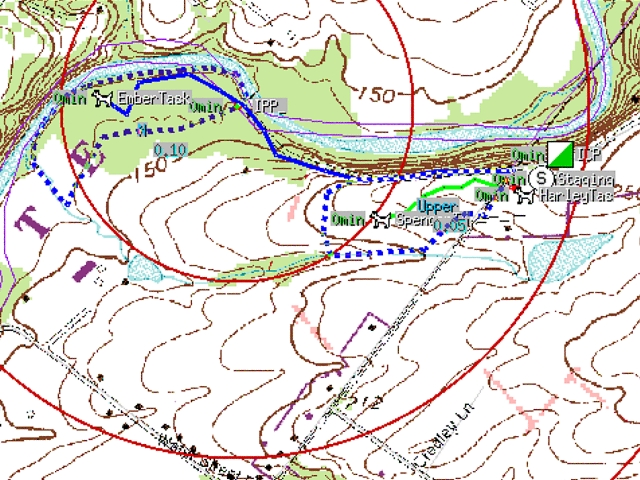

Notes:
The simplest solution is for each task team to keep track of its movements by map and compass, and report periodically back to command. A more complex solution gives each task team a gps receiver and then on its return downloads and plots the location on electronic maps. A further step gives each task team a gps receiver attached to a radio transmitter to transmit the teams location back to the command post. Back tin the command post, these positions can be drawn in real time on an electronic map. APRS, the Amateur Radio based Automatic Position Reporting System is an effective tool for doing just this.
This image is a simulation of some of Xastir's mapping capabilities.